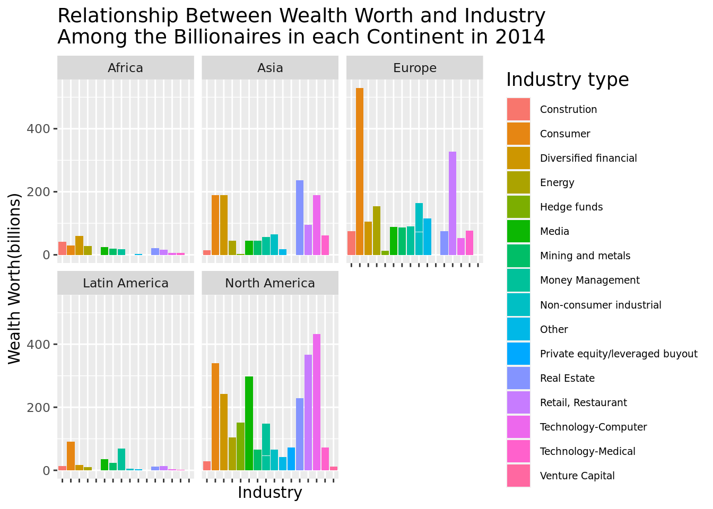

library(tidyverse)
library(tidymodels)Wanna be rich? Here’s how!
A statistical analysis regarding which industry has the highest number of billionaires based on their continent
Introduction and data
Our topic focus on the dataset “Billionaires” (2016), which contains information on the Billionaires in the world in 1996, 2001, 2014. The dataset involves information on each billionaire such as their country, wealth worth, wealth type, industry, etc. Using some of these variables, we came up with a question that helps us gather more insight on the wealth world, which is helpful for those who are deciding which industry to enter in different countries.
Research Question and Hypothesis:
- How has the relationship between wealth worth and industry among billionaires changed in each continent as time goes on?
To answer our full question, based on our prior background knowledge, we predict that the number of billionaires involved in the industry of technology-computer will increase as time goes by because technology is an industry that is growing rapidly. More broadly speaking, we hypothesize that each continent has a different industry that contains the most billionaires, as each continent has very different resources to offer to the world. Additionally, we hypothesize that North America will have the most billionaires, followed by Asia. However, we also acknowledge that each continent is very different, so our prior background knowledge may only apply to North America, where we reside.
The data was from the CORGIS Dataset Project, collected by Ryan Whitcombwas in 1996, 2001, and 2014. We are using data from all three years to see how the wealth industries have changed over time by comparing data about the wealth industries from each provided year. It compiled Forbes World’s Billionaires list and shows a record number of billionaires in the world while adding detailed information on the individuals listed. The relevant variables include the year, wealth worth, industry, and their continent. In total, the data set has 22 columns and 2614 observations.
Methodology
Our methodology involves creating a table that counts the number of billionaires per continent in 2014. This gives us an overview of the numbers alone, industry aside. Next, in order to also compare industry and wealth worth, we thought it would be best to create a bar plot for each continent. Thus we used facet wrap to create multiple side-by-side plots that depict the relationship between industry and wealth worth.
billionaires <- read_csv("data/billionaires.csv")
df_1 <- billionaires|>
filter(year == 2014)|>
dplyr::select(name, "wealth.worth in billions", wealth.how.industry, location.region, location.citizenship)|>
rename_with(~'wealth.worth.billions', "wealth.worth in billions")|>
mutate(continent = case_when(
location.region %in% c("East Asia", "South Asia") ~ "Asia",
location.region == "Middle East/North Africa" ~ "Africa",
location.region == "Sub-Saharan Africa" ~ "Africa",
location.region == "Latin America" & location.citizenship == "Mexico" ~ "North America",
TRUE ~ location.region
))df_1 |>
filter(wealth.how.industry != 0) |>
ggplot(
aes(x = wealth.how.industry, y = wealth.worth.billions, fill = wealth.how.industry)) +
geom_col() +
facet_wrap("continent") +
theme(axis.text.x = element_text(angle = 90)) +
labs(title = "Relationship Between Wealth Worth and Industry\nAmong the Billionaires in each Continent in 2014",
x = "Industry",
y = "Wealth Worth(billions)",
fill = "Industry type") +
theme(plot.title = element_text(size = 14)) +
theme(legend.text = element_text(size = 7)) +
theme(legend.title = element_text(size = 13)) +
theme(axis.text.x = element_blank())
#|: label: Logistic_regression
df_1$wealth.how.industry <- as.factor(df_1$wealth.how.industry)
#My friend's model:
model_2a <- logistic_reg() |>
set_engine("glm") |>
fit(wealth.how.industry ~ wealth.how.industry * wealth.worth.billions,
data = df_1,
family = "binomial") |>
tidy()Warning in model.matrix.default(mt, mf, contrasts): the response appeared on the
right-hand side and was droppedWarning in model.matrix.default(mt, mf, contrasts): problem with term 1 in
model.matrix: no columns are assignedWarning: glm.fit: algorithm did not convergeWarning: glm.fit: fitted probabilities numerically 0 or 1 occurredmodel_2a# A tibble: 18 × 5
term estim…¹ std.e…² statis…³ p.value
<chr> <dbl> <dbl> <dbl> <dbl>
1 (Intercept) 26.6 11182. 2.38e-3 0.998
2 wealth.worth.billions -50.6 102884. -4.92e-4 1.00
3 wealth.how.industryConstrution:wealth.worth… 50.6 103230. 4.91e-4 1.00
4 wealth.how.industryConsumer:wealth.worth.bi… 50.6 102831. 4.92e-4 1.00
5 wealth.how.industryDiversified financial:we… 50.6 102871. 4.92e-4 1.00
6 wealth.how.industryEnergy:wealth.worth.bill… 50.6 102963. 4.92e-4 1.00
7 wealth.how.industryHedge funds:wealth.worth… 50.6 103162. 4.91e-4 1.00
8 wealth.how.industryMedia:wealth.worth.billi… 50.6 102888. 4.92e-4 1.00
9 wealth.how.industryMining and metals:wealth… 50.6 103062. 4.91e-4 1.00
10 wealth.how.industryMoney Management:wealth.… 50.6 102970. 4.92e-4 1.00
11 wealth.how.industryNon-consumer industrial:… 50.6 103006. 4.92e-4 1.00
12 wealth.how.industryOther:wealth.worth.billi… 50.6 103306. 4.90e-4 1.00
13 wealth.how.industryPrivate equity/leveraged… 50.6 104036. 4.87e-4 1.00
14 wealth.how.industryReal Estate:wealth.worth… 50.6 102876. 4.92e-4 1.00
15 wealth.how.industryRetail, Restaurant:wealt… 50.6 102859. 4.92e-4 1.00
16 wealth.how.industryTechnology-Computer:weal… 50.6 102870. 4.92e-4 1.00
17 wealth.how.industryTechnology-Medical:wealt… 50.6 103229. 4.91e-4 1.00
18 wealth.how.industryVenture Capital:wealth.w… 50.6 122947. 4.12e-4 1.00
# … with abbreviated variable names ¹estimate, ²std.error, ³statistic#My model:
model_2b <- logistic_reg() |>
set_engine("glm") |>
fit(wealth.how.industry ~ wealth.how.industry + wealth.worth.billions,
data = df_1,
family = "binomial") |>
tidy()Warning in model.matrix.default(mt, mf, contrasts): the response appeared on the
right-hand side and was droppedWarning in model.matrix.default(mt, mf, contrasts): problem with term 1 in
model.matrix: no columns are assignedWarning: glm.fit: fitted probabilities numerically 0 or 1 occurredmodel_2b# A tibble: 2 × 5
term estimate std.error statistic p.value
<chr> <dbl> <dbl> <dbl> <dbl>
1 (Intercept) 1.49 1.76 0.848 0.397
2 wealth.worth.billions 2.55 1.35 1.89 0.0589AIC_1 <- logistic_reg() |>
set_engine("glm") |>
fit(wealth.how.industry ~ wealth.how.industry * wealth.worth.billions,
data = df_1,
family = "binomial")|>
glance() |>
pull(AIC)Warning in model.matrix.default(mt, mf, contrasts): the response appeared on the
right-hand side and was droppedWarning in model.matrix.default(mt, mf, contrasts): problem with term 1 in
model.matrix: no columns are assignedWarning: glm.fit: algorithm did not convergeWarning: glm.fit: fitted probabilities numerically 0 or 1 occurredAIC_1[1] 36 #My model
AIC_2 <- logistic_reg() |>
set_engine("glm") |>
fit(wealth.how.industry ~ wealth.how.industry + wealth.worth.billions,
data = df_1,
family = "binomial") |>
glance() |>
pull(AIC)Warning in model.matrix.default(mt, mf, contrasts): the response appeared on the
right-hand side and was droppedWarning in model.matrix.default(mt, mf, contrasts): problem with term 1 in
model.matrix: no columns are assignedWarning: glm.fit: fitted probabilities numerically 0 or 1 occurredAIC_2[1] 72.82164Results
To answer our research question, we created a plot to visualize the relationship between industry and wealth worth, with industry being on the x-axis and wealth worth in billions on the y-axis. Additionally, in order to compare these variables by continent, we used facet wrap to make multiple plots next to each other. This visualization made it easy for us to draw conclusions to our question.
From the table depicting the number of billionaires per continent in 2014, we found that overall, North America had the most billionaires (as our hypothesis stated), followed by Europe and then Asia. This does not line up with the prediction, as we had predicted Asia to come first. For industry, we found that technology-computer was in fact the industry with the most billionaires in North America. However, it was found that each continent had a very different turn out regarding which industry was the most successful. For Europe and Latin America, the industry with the most billionaires was the consumer industry; for Africa, the diversified financial industry; and for Asia, the real estate industry.
Citation and Reference
- “Billionaires CSV File” from the CORGIS Dataset Project. By Ryan Whitcomb, Version 2.0.0, created on 5/17/2016.